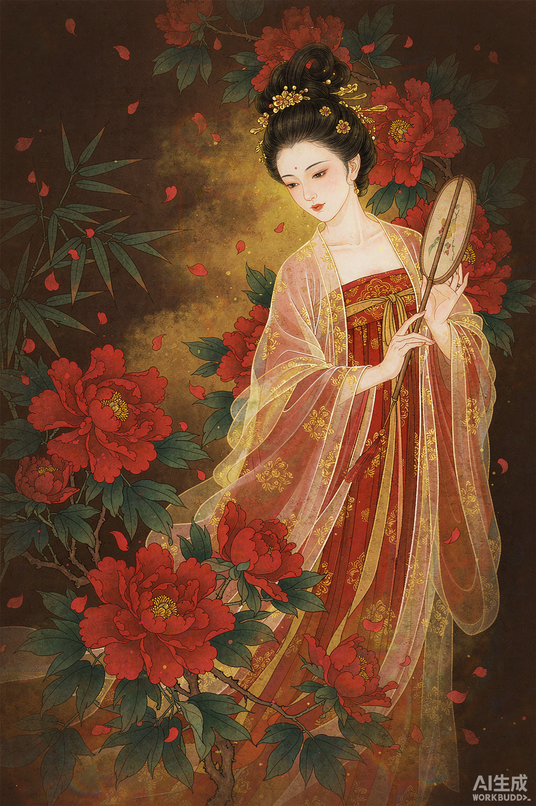
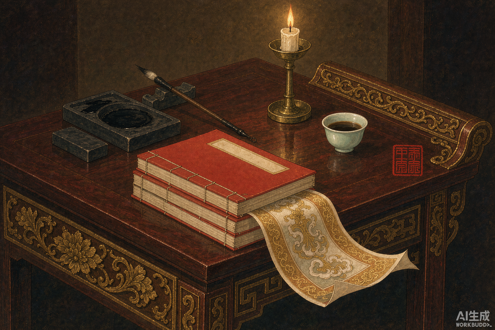

《红楼梦》位列四大名著之首，被誉为中国古典小说的巅峰之作。曹雪芹以贾、史、王、薛四大家族的兴衰为背景，以贾宝玉与林黛玉、薛宝钗的爱情婚姻悲剧为主线，写尽人间百态。
之所以选择它作为创作主题：其一，它是一部"百科全书式"的作品，诗词、饮食、服饰、园林无所不包，创作素材极为丰富；其二，"宝黛钗"的情感纠葛与"金陵十二钗"的命运判词，天然具有强烈的叙事性与戏剧张力，非常适合用视频分回讲述；其三，借这次作业向经典致敬，也是一次难得的深度阅读体验。

▲ 金陵十二钗之林黛玉（工笔画风配图）
不按原著一百二十回逐回讲解，而是精选八个经典桥段，以"第X回·事件"的形式串联：从宝黛初会到晴雯撕扇，由喜转悲、由盛及衰，暗合全书悲剧走向。
整体采用工笔画风 + 深棕底色 + 鎏金标题，取"旧纸鎏金"之意，呼应古典原著的厚重感；每回一张主插画、一段叙事字幕。
片头以开篇诗定调，每回约 15 秒，先画面铺陈、后文案点题；重点台词用「」标注，片尾留白收束，留出回味空间。
黛玉初入荣国府，与宝玉四目相对。宝玉脱口而出：「这个妹妹我曾见过的！」前世神瑛侍者以甘露浇灌绛珠仙草，仙草誓以一生眼泪偿还灌溉之恩。木石前盟就此开启。
宝钗项戴金锁，与宝玉通灵宝玉恰成一对，人称「金玉良缘」。春光明媚之日，她手持纨扇追逐彩蝶，难得露出天真烂漫。然而她深谙世故，将深情藏于礼教之后。
贾府长女元春封妃，圣恩准许省亲。贾府建起「天上人间诸景备」的大观园。上元之夜，园中彩灯万盏，流光溢彩。然而元春含泪叹道：「终无意趣。」盛极必衰。
晴雯容貌冠绝众丫鬟，性情刚烈，从不逢迎。她撕的是尊卑规矩，撕的是丫鬟身份的桎梏。判词「心比天高，身为下贱」，她终被逐出大观园，抱病而亡，是灵魂最自由之人。
文案原则：以白话转述原著情节，保留原文经典台词；每回结尾一句点题，做到"叙事 + 评点"结合。

▲ 素材场景：古籍、笔墨与烛光（工笔画风）
精读前八十回，梳理贾府兴衰时间线，圈定八个代表性回目。
为每一回撰写"画面描述 + 叙事文案 + 点题金句"三段式脚本。
按脚本逐张生成工笔画风插画，统一调色，保证全片视觉一致。
按分镜排列素材，控制每回节奏与转场，叠加字幕与配乐。
核对台词与判词原文，检查错别字，导出成片并压缩体积。
| 环节 | 工具 | 用途说明 |
|---|---|---|
| 文本写作 | 记事本 / Word | 撰写脚本与文案，逐回整理核对原文 |
| 插画生成 | AI 绘图工具 | 生成工笔画风插画，统一深棕鎏金色调 |
| 视频剪辑 | 剪映 | 素材排列、转场、字幕、配乐与导出 |
| 音频处理 | ffmpeg | 背景音乐裁剪、格式转换与音量均衡 |
| 网页制作 | HTML + CSS | 制作本介绍网页，展示完整创作流程 |
《红楼梦》分回解说视频 · 时长约 2 分钟 · 建议横屏观看
这次创作让我第一次以"创作者"而非"读者"的身份走近《红楼梦》。为了让文案准确，我把八回原文反复读了几遍；为了让插画风格统一，我改了十几版提示词——"把经典读厚，再把作品做薄"，大概就是这次作业最好的注脚。
不足之处也很明显：视频篇幅有限，只能撷取八个片段，探春理家、黛玉葬花等名场面未能展开；工笔插画的细节还原度仍有提升空间。未来希望有机会做成一个完整的系列。
"都云作者痴，谁解其中味。"——愿更多人解其中味。